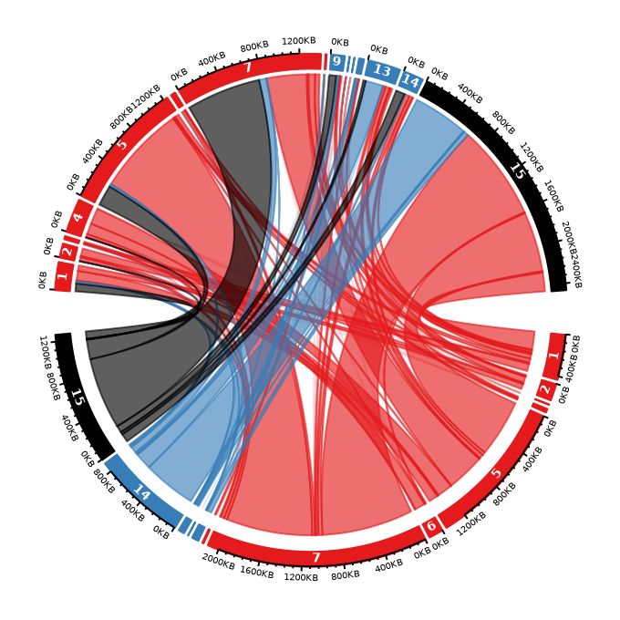
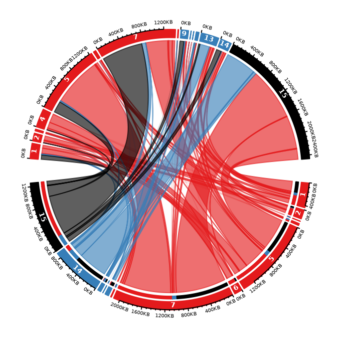
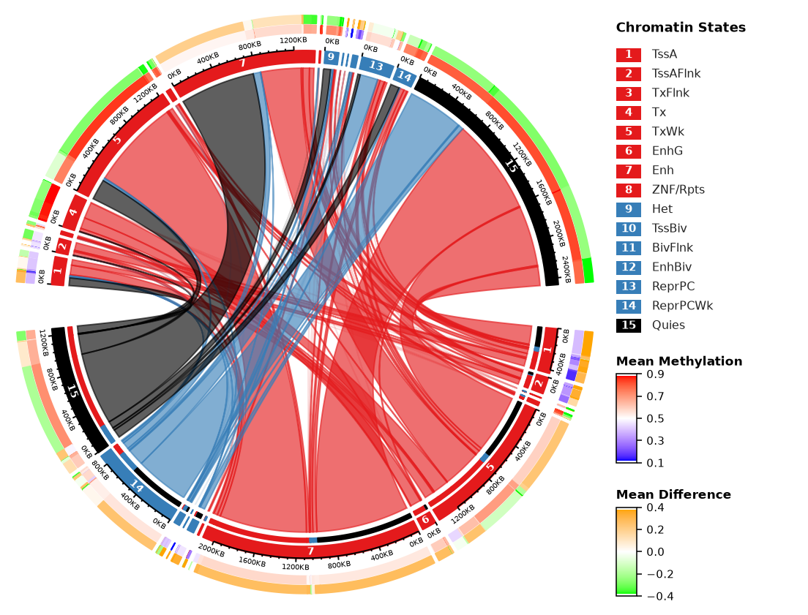

16 A complex example of Chord diagram#
In this chapter, we build a publication-grade Chord diagram step by step to visualize chromatin state transitions alongside DNA methylation changes across two sample groups. A chromatin state transition matrix summarizes how many base pairs in the genome switch from one chromatin state in Group 1 to another state in Group 2, while methylation matrices capture the average methylation level of those transitioning regions in each group.
The example dataset is processed from the Roadmap Epigenomics 15-state core chromatin model learned from five histone marks (ChromHMM 15-state model). Roadmap samples are split into two expression-based groups, and a chromatin state is assigned to each genomic bin if recurrent in at least half of the group’s samples.
Load the pre-converted JSON dataset
(data/chromatin_transition.json):
import json
import matplotlib.patches as mpatches
import matplotlib.pyplot as plt
import numpy as np
import pandas as pd
from circlize_py import (
CELL_META,
chord_diagram,
circos,
color_ramp2,
color_to_hex,
get_cell_meta_data,
mm_y,
)
with open("data/chromatin_transition.json", encoding="utf-8") as fh:
raw = json.load(fh)
all_states = list(raw["mat"]["rownames"])
n_states = len(all_states)
mat_arr = np.array(raw["mat"]["values"], dtype=float)
meth_mat_1 = pd.DataFrame(
np.array(raw["meth_mat_1"]["values"], dtype=float),
index=all_states,
columns=all_states,
)
meth_mat_2 = pd.DataFrame(
np.array(raw["meth_mat_2"]["values"], dtype=float),
index=all_states,
columns=all_states,
)The JSON file stores three 15x15 matrices:
mat: chromatin state transition matrix where rows represent states in Group 1 and columns represent states in Group 2. Entry(i, j)gives the total base pairs transitioning from stateiin Group 1 to statejin Group 2 (for example,TssAtoTxFlnk). Diagonal entries correspond to regions whose state remains unchanged between groups.meth_mat_1: mean DNA methylation in Group 1 for regions transitioning from row stateito column statej(nullin JSON maps toNaNwhen zero base pairs are observed).meth_mat_2: mean DNA methylation in Group 2 for the same transitioning regions.
pd.DataFrame(mat_arr[:4, :4], index=all_states[:4], columns=all_states[:4]) TssA TssAFlnk TxFlnk Tx
TssA 497200.0 79600.0 13400.0 1800.0
TssAFlnk 56400.0 233200.0 5000.0 800.0
TxFlnk 0.0 400.0 43000.0 1800.0
Tx 800.0 200.0 200.0 166400.0Across the genome, most regions (~61.9%) keep the same chromatin state in both groups. To focus exclusively on state switches, we record that proportion and zero out the diagonal:
unchanged_prop = float(np.trace(mat_arr) / np.sum(mat_arr)) # ~0.619226
np.fill_diagonal(mat_arr, 0.0)Because Group 1 and Group 2 represent distinct sample groups even
though they share the 15 state names, we assign distinct row and column
identifiers (R_1..R_15 and
C_1..C_15) while preserving the original names
in all_states:
rn = [f"R_{i}" for i in range(1, n_states + 1)]
cn = [f"C_{i}" for i in range(1, n_states + 1)]
mat = pd.DataFrame(mat_arr, index=rn, columns=cn)
meth_mat_1.index, meth_mat_1.columns = rn, cn
meth_mat_2.index, meth_mat_2.columns = rn, cnNext, we assign group colors (red for active states
1–8, blue for repressed/bivalent states
9–14, and black for quiescent state
15) and build a 2D link-color array colmat.
Major transitions above the 70th percentile receive higher opacity
("A0") while minor transitions fade into the background
("20"):
state_col = {
"TssA": "#E41A1C", "TssAFlnk": "#E41A1C", "TxFlnk": "#E41A1C", "Tx": "#E41A1C",
"TxWk": "#E41A1C", "EnhG": "#E41A1C", "Enh": "#E41A1C", "ZNF/Rpts": "#E41A1C",
"Het": "#377EB8", "TssBiv": "#377EB8", "BivFlnk": "#377EB8", "EnhBiv": "#377EB8",
"ReprPC": "#377EB8", "ReprPCWk": "#377EB8", "Quies": "black",
}
state_col2 = {}
for i, st in enumerate(all_states, start=1):
state_col2[f"R_{i}"] = state_col[st]
state_col2[f"C_{i}"] = state_col[st]
qati = float(np.quantile(mat_arr, 0.7))
colmat = np.empty(mat_arr.shape, dtype=object)
for i in range(n_states):
hx = color_to_hex(state_col2[rn[i]], include_alpha=False)
for j in range(n_states):
colmat[i, j] = hx + ("A0" if mat_arr[i, j] > qati else "20")Now we initialize the directional Chord diagram with
annotation_track="grid" and pre-allocate one outer track
(track_index=1) that will later hold the methylation rings.
Notice that chord_diagram() returns a
DataFrame containing the exact angular intervals
(x1, x2) and widths (value1,
value2) for every link:
circos.par(cell_padding=(0, 0, 0, 0), points_overflow_warning=False)
cdm_res = chord_diagram(
mat,
col=colmat,
grid_col=state_col2,
directional=True,
annotation_track="grid",
big_gap=10,
small_gap=1,
pre_allocate_tracks={"track_height": 0.1},
link_target_prop=False,
)
circos.par(points_overflow_warning=False)
cdm_res.head() rn cn value1 value2 o1 o2 x1 x2 col
0 R_1 C_1 0.0 0.0 15 13 431200.0 267200.0 #E41A1C20
1 R_2 C_1 56400.0 56400.0 15 12 159800.0 267200.0 #E41A1CA0
2 R_3 C_1 0.0 0.0 15 11 3600.0 210800.0 #E41A1C20
3 R_4 C_1 800.0 800.0 15 10 34600.0 210800.0 #E41A1C20
4 R_5 C_1 98200.0 98200.0 15 9 1411600.0 210000.0 #E41A1CA0
Next, we update the grid track (track_index=2, since
track 1 was pre-allocated) to draw the state index numbers
(1–15) centered inside sectors wider than 3
degrees, along with genomic kilobase axes along the outer edge:
def panel_t2(x, y):
if abs(CELL_META.cell_start_degree - CELL_META.cell_end_degree) > 3:
sn = CELL_META.sector_index
i_state = int(sn.split("_")[1])
circos.text(
CELL_META.xcenter,
CELL_META.ycenter,
str(i_state),
col="white",
font=2,
cex=0.7,
adj=(0.5, 0.5),
nice_facing=True,
)
xlim = CELL_META.xlim
breaks = np.arange(0.0, float(xlim[1]) + 1e-9, 4e5)
circos.axis(
major_at=breaks,
labels=[f"{int(round(b / 1000))}KB" for b in breaks],
labels_cex=0.5,
)
circos.track(track_index=2, panel_fun=panel_t2, bg_border=None)
In the upper half (Group 2), link colors immediately reveal which
Group 1 states feed into each Group 2 state. In the lower half (Group
1), however, all outgoing links from a given sector share that source
sector’s color, hiding the destination state breakdown. Adding thin
colored indicator rectangles along the inner edge of track 2
(-mm_y(1) to -mm_y(2)) displays the
destination state color for every outgoing sub-interval (we turned
link_target_prop=False earlier to illustrate how
cdm_res coordinates power custom annotations):
for _, row in cdm_res.iterrows():
v1 = float(row["value1"])
if v1 > 0:
rn_i = str(row["rn"])
cn_i = str(row["cn"])
x1 = float(row["x1"])
y_top = -float(mm_y(1.0, sector_index=rn_i, track_index=2))
y_bot = -float(mm_y(2.0, sector_index=rn_i, track_index=2))
circos.rect(
x1, y_bot, x1 - abs(v1), y_top,
col=state_col2[cn_i], border=state_col2[cn_i],
sector_index=rn_i, track_index=2,
)
Now we populate the pre-allocated outer ring
(track_index=1) with two stacked heatmap strips for each
transition interval:
- Inner strip: mean methylation in the corresponding
group (
meth_mat_1on the bottom Group 1 sectors;meth_mat_2on the top Group 2 sectors), colored from blue (low) through white (0.5) to red (high). - Outer strip: methylation change relative to the
sector’s own group (
meth_mat_2 - meth_mat_1for Group 1 -> Group 2 on the bottom;meth_mat_1 - meth_mat_2for Group 2 -> Group 1 on the top), colored from green (negative) through white (0) to orange (positive).
combined = np.concatenate([meth_mat_1.to_numpy().ravel(), meth_mat_2.to_numpy().ravel()])
abs_max = float(np.nanquantile(np.abs(combined - 0.5), 0.95))
col_fun = color_ramp2([0.5 - abs_max, 0.5, 0.5 + abs_max], ["blue", "white", "red"])
col_fun2 = color_ramp2([-abs_max, 0.0, abs_max], ["green", "white", "orange"])
ylim = get_cell_meta_data("ylim", sector_index=str(mat.index[0]), track_index=1)
y1 = float(ylim[0]) + (float(ylim[1]) - float(ylim[0])) * 0.4
y2 = float(ylim[1])
for _, row in cdm_res.iterrows():
v1 = float(row["value1"])
if v1 <= 0:
continue
rn_i = str(row["rn"])
cn_i = str(row["cn"])
x1 = float(row["x1"])
x2 = float(row["x2"])
m1_val = float(meth_mat_1.loc[rn_i, cn_i])
m2_val = float(meth_mat_2.loc[rn_i, cn_i])
c_m1 = col_fun(m1_val)
c_d12 = col_fun2(m2_val - m1_val)
c_m2 = col_fun(m2_val)
c_d21 = col_fun2(m1_val - m2_val)
circos.rect(x1, y1, x1 - abs(v1), y1 + (y2 - y1) * 0.45, col=c_m1, border=c_m1, sector_index=rn_i, track_index=1)
circos.rect(x1, y1 + (y2 - y1) * 0.55, x1 - abs(v1), y2, col=c_d12, border=c_d12, sector_index=rn_i, track_index=1)
circos.rect(x2, y1, x2 - abs(v1), y1 + (y2 - y1) * 0.45, col=c_m2, border=c_m2, sector_index=cn_i, track_index=1)
circos.rect(x2, y1 + (y2 - y1) * 0.55, x2 - abs(v1), y2, col=c_d21, border=c_d21, sector_index=cn_i, track_index=1)
circos.clear()
Finally, following the multi-panel layout techniques from Legends, we reserve the right side of the
Matplotlib figure for three legends: the 15 numbered chromatin-state
swatches and two continuous colorbars (Mean Methylation and
Mean Difference).
fig = plt.figure(figsize=(8.0, 6.2))
ax = fig.add_axes([0.02, 0.04, 0.72, 0.92])
ax.set_xlim(-1.0, 1.0)
ax.set_ylim(-1.0, 1.0)
ax.set_aspect("equal")
ax.axis("off")
plt.sca(ax)
# Draw the Chord diagram and methylation rings inside `ax`,
# then add the chromatin-state legend and two colorbars on the right.